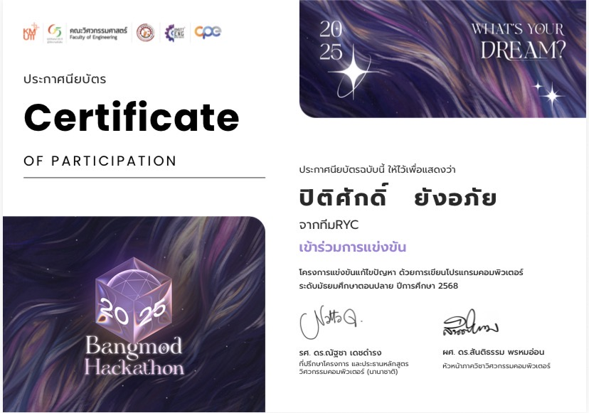
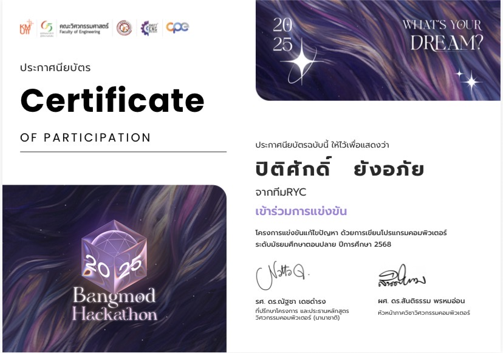

เข้าร่วมกิจกรรมเวิร์กช็อปและHackathon AI for Next Gen – พลิกโฉมท่องเที่ยวยุคใหม่ด้วย AI
.png)

โดยในกิจกรรมนี้ผมและทีมออกแบบและสร้างเว็บไซต์ด้วย ai โดยเราได้ Lovable AI ซึ่งเป็นเครี่องมือประเภท AI UI Generator ในการทํา frontend และในส่วน backend ใช้ make.com ซึ่งเป็นระบบ AI Workflow Automation โดยผลลัพธ์ที่ได้จะเป็นเว็บที่ช่วยแก้ปัญหาการวางแผนท่องเที่ยวที่ซับซ่อน โดยผู้ใช้งานเพียงระบุจังหวัดและช่วงวันที่เดินทาง ระบบ AI จะสร้าง และนําเสนอแผนการท่องเที่ยวที่เหมาะสม
พร้อมประมาณงบประมาณ และพยากรณ์อากาศให้โดยอัตโนมัติ
สิ่งที่ได้รับจากการเข้าร่วมกิจกรรมนี้ คือ ได้เรียนรู้กระบวนการพัฒนาเว็ปในเวลาที่จํากัด 24 ชม. ได้เรียนรู้การประยุกต์ใช้เครื่องมือ AI สมัยใหม่ทั้งในการสร้าง frontend และ การวางระบบ backend ที่เป็น ai workflow automation และได้ฝึกทักษะการนําเสนอ
ได้เข้าร่วมการแข่งขัน SciPSU x NECTEC: AI For Thai Hackathon 2025


รายการนี้เป็นการแข่งขันพัฒนาเว็ปต้นแบบใน 24 ชม. ในหัวข้อ บริการ AI เพื่อท้องถิ่น โดยต้องเชื่อมต่อ API จากแพลตฟอร์ม "AI For Thai" ของ NECTEC เข้ากับเว็บไซต์ที่เราพัฒนาขึ้นเพื่อสร้างฟังก์ชัน การทํางานที่ขับเคลื่อนด้วย AI
สิ่งที่ได้จากการแข่งขันนี้ คือ การพัฒนาโปรเจกต์อย่างรวดเร็วและการแก้ปัญหาเฉพาะหน้าอย่างมีประสิทธิภาพและทีมของผมได้เรียนรู้วิธีการดึง API มาใช้โดยใช้ Proxy เพราะเว็ปที่ทีมผมสร้างขึ้นนั้นใช้ HTML,JAVASCRIPT,CSS ซึ่งต่างจากการใช้ Node JS ที่สามารถดึง API มาใช้ได้เลย
เป็นตัวแทนของโรงเรียนเข้าร่วมการแข่งขันแก้ไขปัญหาด้วยการเขียน โปรแกรมคอมพิวเตอร์ ระดับมัธยมศึกษาตอนปลาย ในรายการ Bangmod Hackathon 2024และ2025
 

ในการแข่งขันนี้ผมและทีมต้องใช้ทักษะการวิเคราะห์โจทย์ใน หมวดคณิตศาสตร์ หมวดวิทยาการคอม และ หมวดอัลกอริทึมเพื่อหาวิธีแก้ไขปัญหาด้วยโค้ดภาษา C ในเวลาที่จํากัดและเป็นการพํฒนาทักษะทางด้านภาษา c ของผมด้วย
เข้าร่วมในโครงการแข่ง Hackathon ภายใต้กิจกรรม “Hack Hed Dee” สร้างไอเดีย ผลิตต้นแบบนวัตกรรมและเทคโนโลยีส่งเสริมการทํางานใน องค์กรสําหรับคนพิการ

ทีมของผมได้ส่งไอเดียแอปพลิเคชันฝึกทักษะการสื่อสาร ในชีวิตประจําวันสําหรับผู้ที่มีความบกพร่องทางการสื่อสาร เพื่อช่วยให้สามารถโต้ตอบในสถานการณ์ต่างๆ ได้อย่างมั่นใจยิ่งขึ้น
เข้าร่วมการอบรมออนไลน์ หลักสูตร “Transform Your Tomorrow With AI:ก้าวสู่ศักยภาพใหม่ด้วยปัญญาประดิษฐ์” โครงการ”กล้าใหม่...ใฝ่รู้” ปี 2568

ผมได้เรียนรู้ทักษะการใช้ AI ในด้านต่างๆ ทั้งการใช้ AI ในการพัฒนาต่อยอดนวัฒกรรมต่างๆ การนำ AI ไปใช้ในด้านการประกอบการเพื่อสร้างรายได้ และที่สำคัญผมไอเรียนรู้การนำ AI มาพัฒนาต่อยอดงานของผม